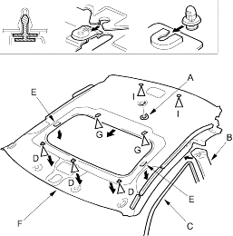
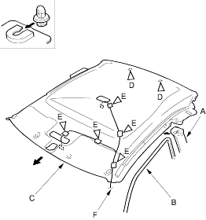

- Remove the headliner.
With sunroof:
- Remove the socket plug (A).
- Remove the upper portion of the centre-pillar upper trim (B) from one side (see page 20-34).
- Remove the remaining door opening trim (C) from each roof portion.
- Detach the clips (D) and release the fasteners (E) by pulling the front portion of the headliner (F) down.
- With the help of an assistant, release the clips (G) of the headliner from the sunroof frame (H) and release the headliner from the clips (I) by sliding the headliner forward and lowering the headliner.
- Remove the headliner through the passenger's door opening.
Fastener Locations
D  : Clip, 3G : Clip, 2I : Clip, 2
: Clip, 3G : Clip, 2I : Clip, 2

- Remove the headliner.
Without sunroof:
- Remove the upper portion of the centre-pillar upper trim (A) from one side (see page 20-34).
- Remove the remaining door opening trim (B) from each roof portion.
- With the help of an assistant, release the headliner (C) from the clips (D) by sliding the headliner forward and lowering the headliner.
- Remove the cushion tape (E), then remove the roof harness (F) from the headliner. LHD is shown, RHD is symmetrical.
- Remove the headliner through the passenger's door opening.
Fastener Locations
D : Clip, 2E : Cushion tape, 5 or 3
